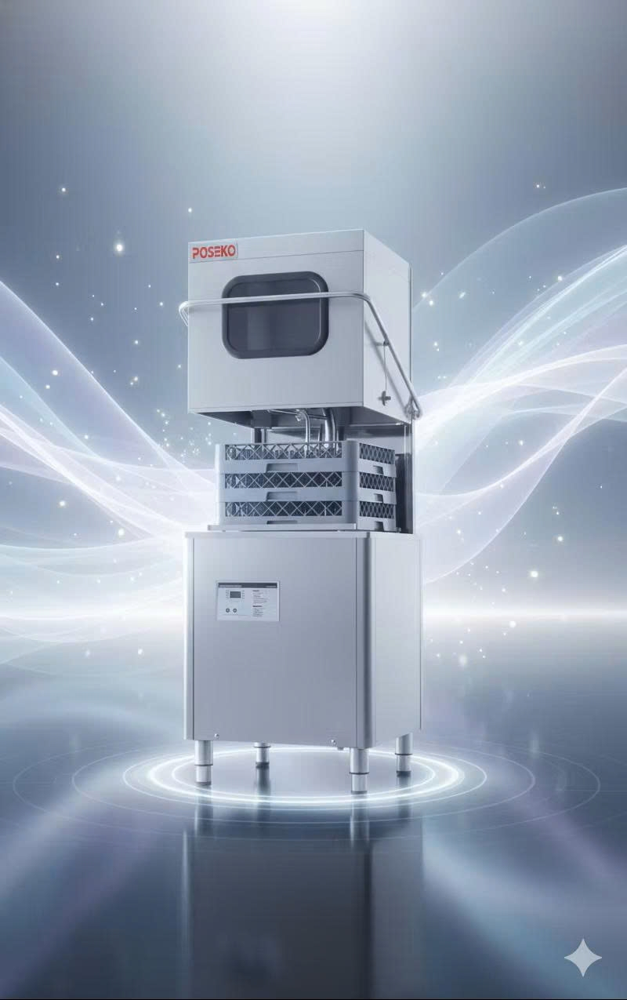
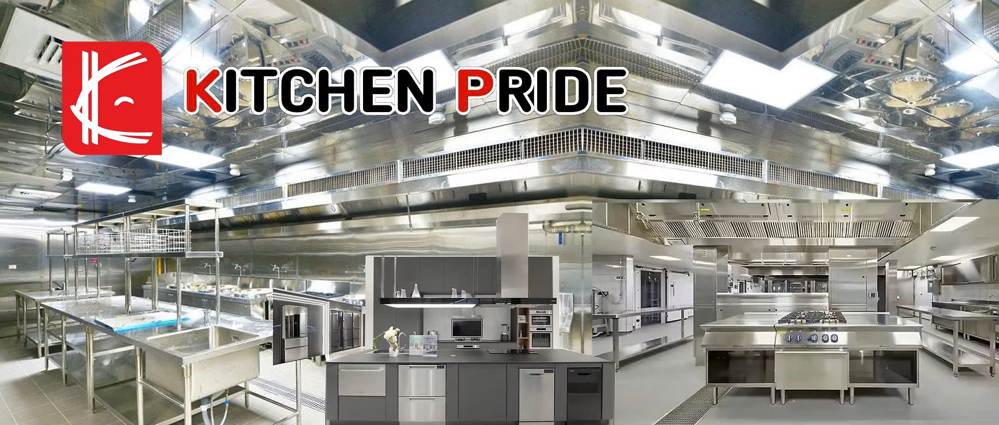
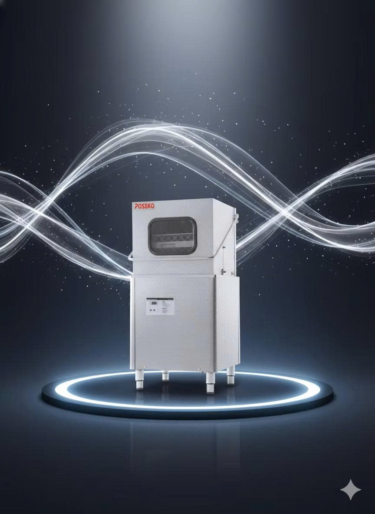
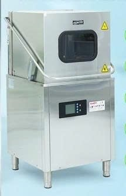
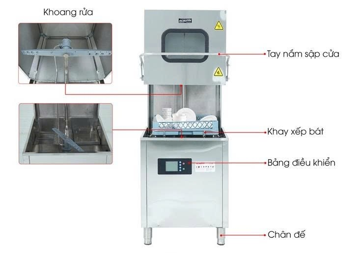
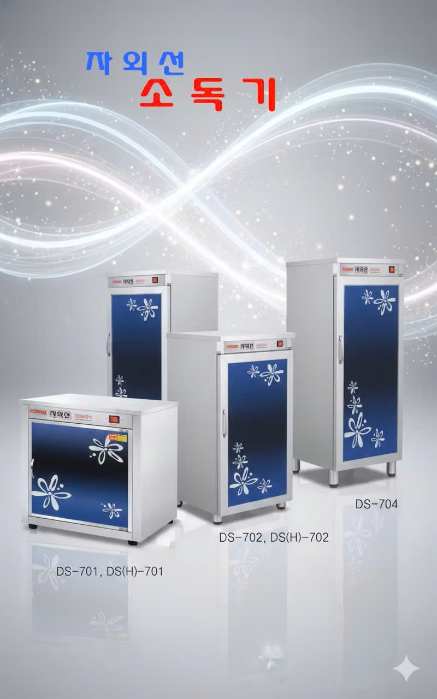
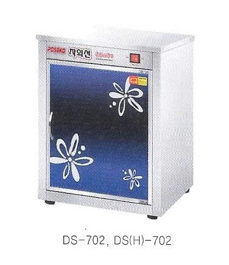
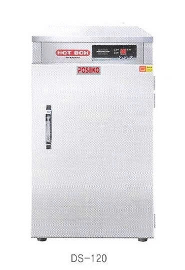
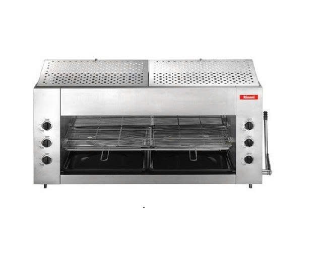

WASHING
매일 쓰는 조리 도구부터 업소용 주방기기까지. 필요한 제품을 살펴보고, 주방 환경에 맞는 구성과 주문 제작을 상담해 보세요.

업소용 세척·소독·보온 설비와 그릴 제품 사진을 추가했습니다.









아래 제품군은 제공된 키친프라이드 카탈로그 이미지에 기재된 항목을 기준으로 정리했습니다.
세부 모델과 재고, 사양은 문의해 주세요.
냉장고·냉동고 · 유리문 냉장고 · 작업대 냉장고 · 밧트 냉장고 · 토핑 냉장고 · 김치 냉장고 · 쇼케이스 · 숙성고 · 슬러시 냉장고 · 육수 냉장고 · 제빙기 · 보온고
하향식 로스타 · 화로식 로스타 · 가스직화그릴 로스타 · 숯·부탄 로스타 · 무연숯불 로스타 · 닭갈비 로스타 · 사각무연 로스타 · 수냉식 로스타 · 돌판 로스타 · 철판 구이기 · 업소용 인덕션 · 무연전기 로스타 · 전기 로스타 · 코팅 불판 · 계란 불판 · 쭈꾸미 철판 · 스텐 불판 · 실석쇠 · 석쇠 · 구이기 · 초벌 구이기
식기 세척기 · 싱크대·잔반처리대 · 작업대·선반 · 불판 세척기 · 튀김기 · 탁상형 튀김기 · 자동 튀김기 · 부침기 · 육절기 · 슬라이서기 · 골절기 · 민서기 · 연육기 · 칼절기 · 반죽기 · 제면기 · 냉면기 · 양념 분쇄기 · 마늘편기 · 파절기·탕파기 · 스탠믹서기 · 포장기계
멜라민 그릇 · 티타늄 찬기 · 방짜 그릇 · 스테인리스 찬기 · 양은 그릇 · 황전골 황냄비 · 주전자 · 양은 도시락 · 경질 전골냄비 · 삼중 전골팬 · 후라이팬·궁중팬 · 경질 나무자루 웍 · 양은 중국팬 · 중화팬 · 뚝배기 · 무쇠솥 · 돌솥 · 돌 김치전골 · 스테인리스 통 · 믹싱볼·양푼 · 스테인리스 양념통 · 밧드 · 수저·젓가락 · 수저함
숯대감 발화기 · 숯통·집게 · 후드·코브라 후드 · 칼 · 가위 · 스텐 집게 · 전지가위 · 채칼 · 밀폐통 · 물통 · 소스통 · 목기 조리도구 · 타이머·온도계 · 서빙카트 · 강통 테이블 · 피자화덕 · 전기 물끓이기 · 면 삶는 기계 · 순대 기계 · 부르스타 · 어묵 조리기 · 전기 떡볶기 · 카스 저울 · 압력돌솥기 · 쿠쿠 전기밥솥 · 린나이 가스밥솥 · 풍년 압력밥솥
제품명이나 필요한 용도를 알려주시면 상담해 드립니다.